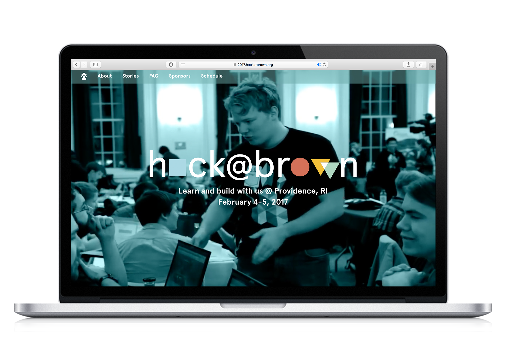
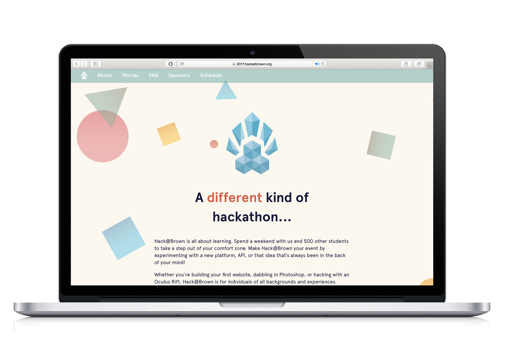
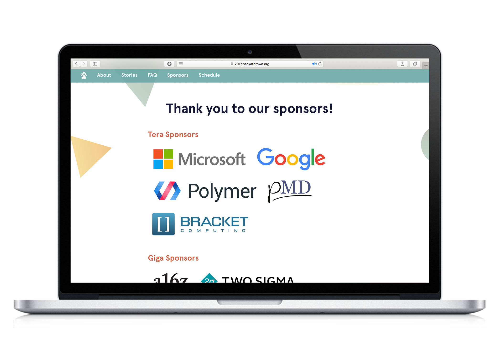

← 🏠Home
Hack@Brown
🌐Languages: Python (Flask), html/CSS, Javascript
📅Date: Fall 2016-present
🔗Link: 2017 site and current site
Hack@Brown is Brown's major hackathon. It places emphasis on learning and collaboration over competition. My role as a Hack@Brown organizer is twofold. I'm a developer for our webpage, and I also plan events to ensure that the hackathon is as socially impactful as possible.
Development
As a web developer on a team of six, I took the wireframes created by our lovely design team and made them into robust, beautiful webpages. This year, I created the home page for the hackathon, handled authentication for organizers using Slack APIs, and worked on a program to randomize hackathon admittance (with preferences given to first-time hackers, women, and underrepresented groups). Below are some screenshots from the webpage.
  Social Impact
At hackathons, students often make projects that they never touch again after the span of 24 hours. At Hack@Brown, we're looking to do something different. My work this year has been focused on bringing local non-profits, leaders of student groups, and professors with projects to the hackathon to speak about the social impact they are trying to achieve and the technological problems that currently stand in their way. Through a series of presentations followed by a career-fair style event the night before the hackathon, students can learn about other projects they can tackle during the weekend with real social impact. Examples of this include:
Creating a database for Project Efiwe for used textbooks to donate them to students in Africa who cannot access or afford them
- Building websites for various Brown student groups to display all of their hard work and potentially get more sponsorship
Creating a forum for students to talk to one another about the challenges they face at Providence public schools with Providence Student Union
These projects will make a real difference in the community and students can continue to work on them after the hackathon. 🏆